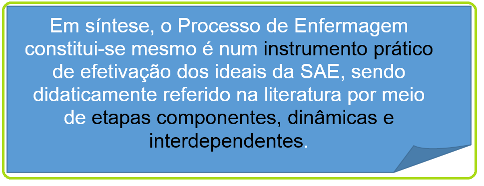
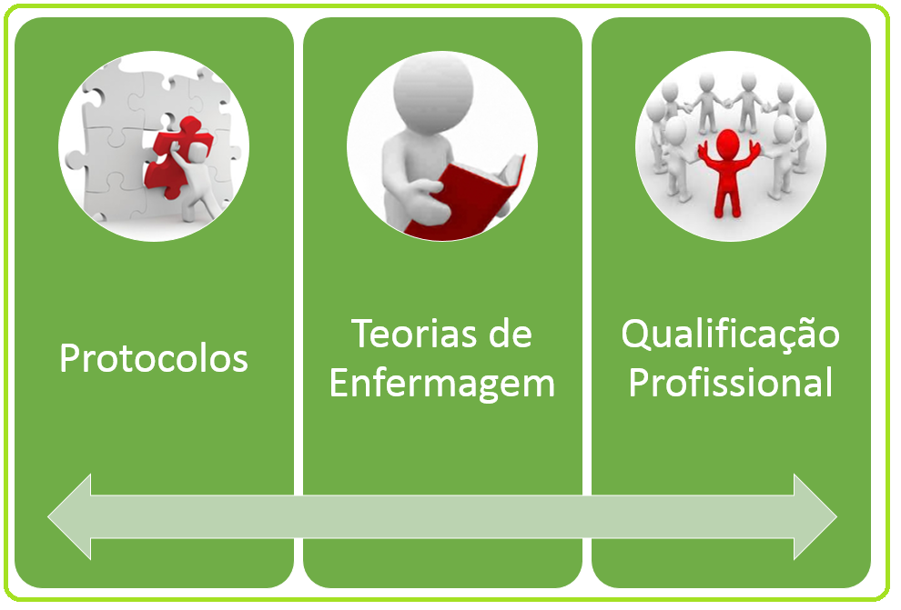
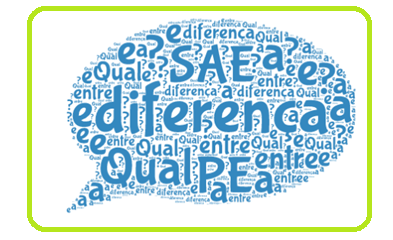

Objetivo de aprendizagem: Apreender a diferença entre os conceitos de SAE e de Processo de Enfermagem.
Qual a diferença entre SAE e Processo de Enfermagem?
E como a SAE pode ser operacionalizada?
Como já discutimos, a SAE organiza o trabalho profissional quanto ao método, pessoal e instrumentos, tornando possível a operacionalização do Processo de Enfermagem (PE) .
O PE, por sua vez, é o conjunto de ações que a equipe de enfermagem realiza, tendo em vista as necessidades da pessoa, família ou coletividade.
Simplificando, o PE constitui-se num instrumento prático de efetivação dos objetivos da SAE, sendo didaticamente referido na literatura por meio de etapas componentes, dinâmicas e interdependentes, as quais aparecem na literatura especializada de maneiras diversas, quanto ao número e à sua organização.
O Conselho Federal de Enfermagem (COFEN), por exemplo, traz em sua Resolução nº 358 o PE composto por cinco etapas fundamentais, quais sejam: o histórico (ou coleta de dados), o diagnóstico, o planejamento, a implementação e a avaliação de enfermagem.
Reconhece-se, todavia, o caráter cíclico das etapas do PE, sendo que cada uma fica na dependência da exatidão da anterior, para que o processo seja desenvolvido com eficácia e resolutividade(1).
Tudo aquilo que visa organizar a assistência de enfermagem, em busca de um processo de trabalho que funcione em sistema, integra a SAE. Vejamos alguns exemplos!
Ou seja, o PE faz parte dos meios de operacionalizar a SAE, mas não é o único!


Que tal refletir um pouco sobre a diferença entre SAE e PE?
A proposta é que você construa uma nuvem de palavras que destaque o seu aprendizado sobre esses elementos.
Muito provavelmente você já viu uma nuvem de palavras, mas você sabe como podem ser utilizadas? Já construiu uma?
Na internet encontramos alguns sites que funcionam como ferramentas para a criação de nuvem de palavras. A maioria deles funciona da mesma forma: colocamos o texto na caixa, selecionamos algumas opções e temos uma nuvem de palavras.
Algumas ferramentas oferecem mais opções do que outras, como permitir palavras em várias direções ou nuvens de diferentes formas.
A seguir uma lista das mais indicadas por sites e blogs que falam sobre o assunto:
TAGUL
Tutorial Tagul:
WORDLE
Tutorial Wordle:
Referências:
- Carpenito LJ. Manual de diagnósticos de enfermagem. 9ª ed. Porto Alegre, RS: Artmed; 2003.
- Conselho Regional de Enfermagem – São Paulo (COREN-SP). Guia para construção de protocolos assistenciais de enfermagem. São Paulo: COREN-SP; 2015.
- Carvalho EC, Dalri MCB, Napoleão AA, Ramos LAR, Salvador M, Reis PED. A contribuição dos membros da equipe de enfermagem para o Processo de Enfermagem na visão dos enfermeiros. Rev Min Enferm. 2008; 12(1):71-8.